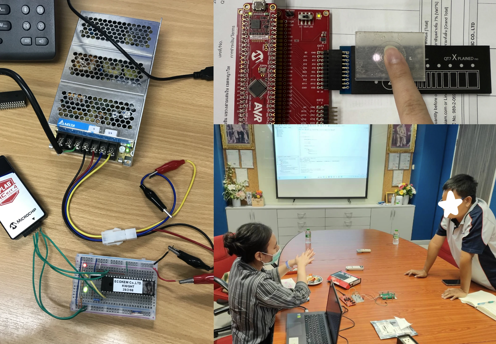
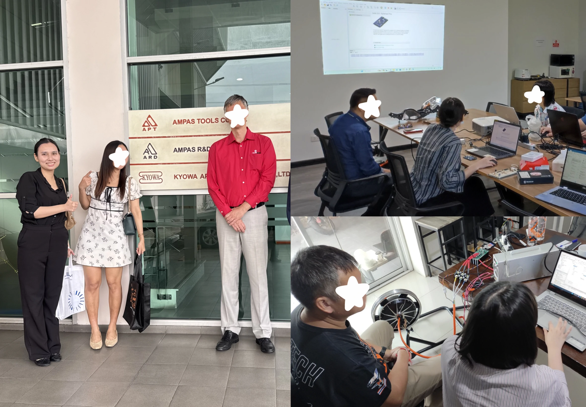
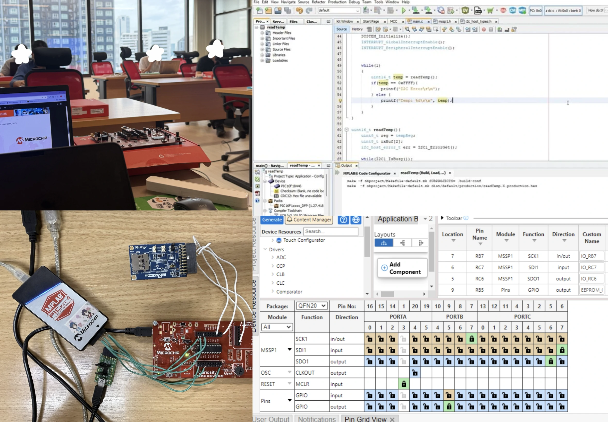
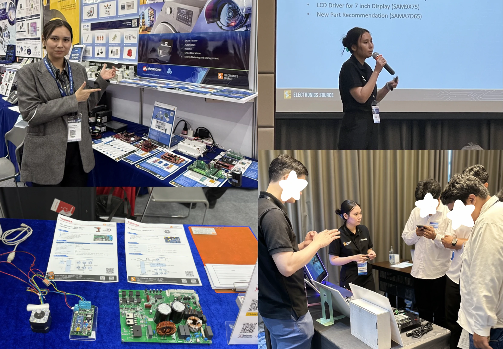
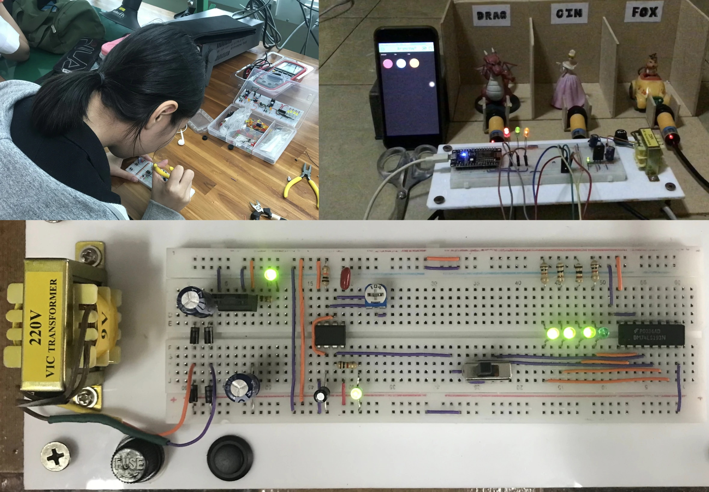
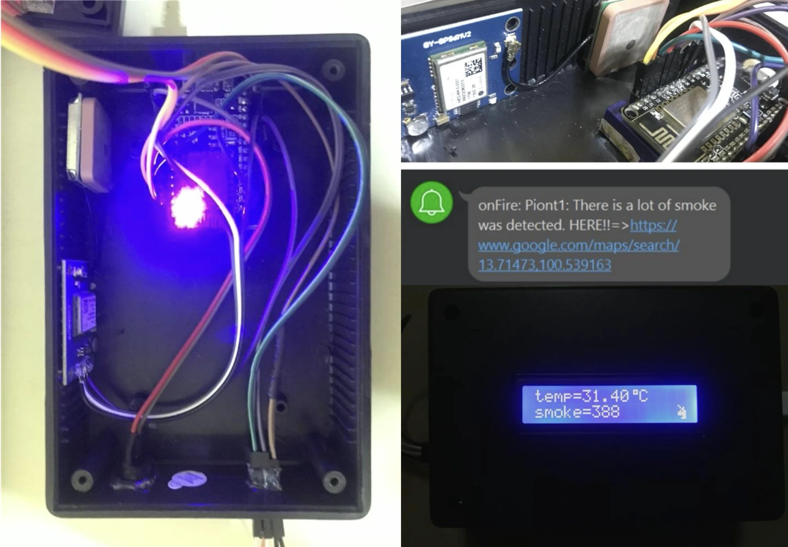
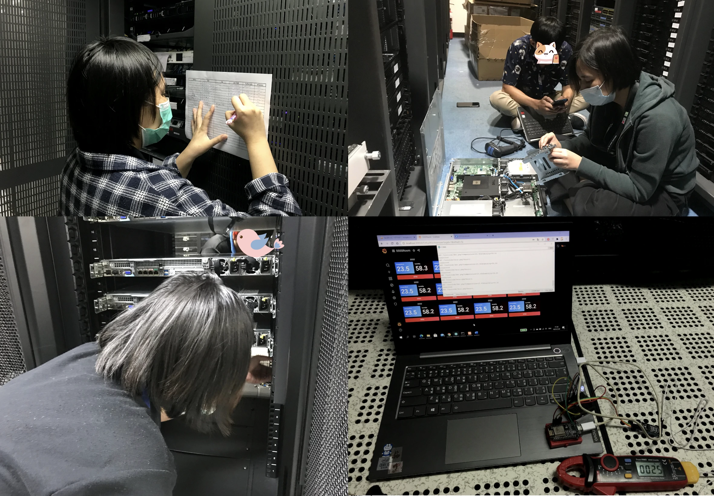
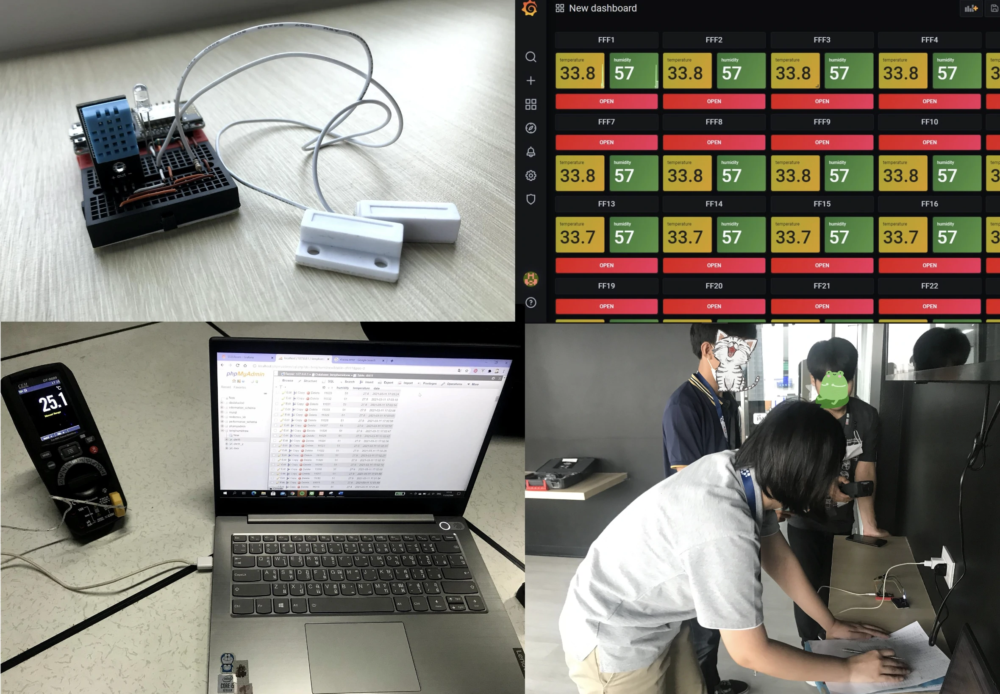

Work Experience
Field Application Engineer
Electronics Source | Nov 2022 - Present

Customer Technical Support
MCU, Discrete, Embedded Systems
Supported customer projects by troubleshooting product issues and providing initial solutions before escalating to suppliers.

Product Demonstration & Promotion
Customer Visits, Solution Proposal
Joined customer visits to present and promote products, explaining technical features and translating them into practical use cases to support customer decision-making.

Technical Training & Workshops
On-site & Online Training
Delivered on-site training sessions for customers, using structured content developed from my own technical materials, including tutorials similar to those on my YouTube channel.

Exhibition & Technical Events
Seminars, FMA, NEPCON
Participated in technical events and exhibitions such as FMA and NEPCON, supporting live demonstrations, engaging with customers, and assisting in seminar activities.
Education and Internship
Education

Electronics and Communications Engineering
RMUTK | Jun 2017 - Apr 2022
Studied core subjects in electronics, digital systems, and communications engineering with a GPA of 3.58.

Smoke Detection and Notification System
Thesis project
Hands-on MCU-based project involving sensor integration, real-time monitoring, and alert notification.
Internship

Internship
PROEN | Nov 2020 - Mar 2021
Completed a 4-month internship at PROEN Corp, a data center company. Worked as general assistance in Data Center Rack and Server Operations.

Temperature Monitoring system with Grafana
Mini Project
Collecting sensor data and visualizing it on a dashboard.